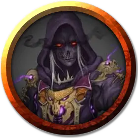

Ялага Маладвин
Yalaga Maladwyn
Средняя Нежить, нейтрально-злая, именной НИП

Класс Доспеха 16 (чешуйчатый доспех)
Хиты 71 (13к8 + 13)
Скорость 30 футов
| мод | спас | ||
|---|---|---|---|
| СИЛ | 10 | +0 | +0 |
| ЛОВ | 14 | +2 | +2 |
| ТЕЛ | 12 | +1 | +4 |
| мод | спас | ||
|---|---|---|---|
| ИНТ | 13 | +1 | +1 |
| МДР | 17 | +3 | +6 |
| ХАР | 18 | +4 | +7 |
Навыки Восприятие +6, Проницательность +6, Религия +4, Скрытность +5
Чувства тёмное зрение 120 футов, пассивное Восприятие 16
Языки Подземный, Эльфийский
Опасность 8 (3900 опыта)
Бонус мастерства +3
Среда обитания Подземье
Особенности
Врождённое колдовство. Базовой характеристикой для врождённых заклинаний Ялаги является Харизма (Сл спасброска от заклинания 15). Она может накладывать следующие заклинания, не нуждаясь в материальных компонентах:
• Неограниченно:пляшущие огоньки [dancing lights];
• 1/день каждое:левитация [levitate] (только на себя), огонь фей [faerie fire], тьма [darkness].
Использование заклинаний. Ялага является заклинателем 10-го уровня. Её базовой характеристикой является Мудрость (Сл спасброска от заклинания 14, +6 к попаданию атаками заклинаниями). У неё подготовлены следующие заклинания жреца:
• Заговоры (неограниченно): сопротивление [resistance], указание [guidance], уход за умирающим [spare the dying], чудотворство [thaumaturgy], ядовитые брызги [poison spray];
• 1 уровень (4 ячейки): дружба с животными [animal friendship], лечение ран [cure wounds], луч болезни [ray of sickness], обнаружение болезней и яда [detect poison and disease];
• 2 уровень (3 ячейки): защита от яда [protection from poison], малое восстановление [lesser restoration], паутина [web];
• 3 уровень (3 ячейки):призыв животных [conjure animals] (2 гигантских паука), рассеивание магии [dispel magic];
• 4 уровень (3 ячейки): предсказание [divination], свобода перемещения [freedom of movement];
• 5 уровень (2 ячейки): множественное лечение ран [mass cure wounds], нашествие насекомых [insect plague].
Чувствительность к солнечному свету. Находясь на солнечном свету, Ялага совершает с помехой броски атаки, а также проверки Мудрости (Восприятие), полагающиеся на зрение.
Действия
Мультиатака. Ялага совершает две атаки плетью.
Плеть. Рукопашная атака оружием: +5 к попаданию, досягаемость 5 футов, одна цель. Попадание: 5 (1к6 + 2) колющего урона плюс 17 (5к6) урона ядом.